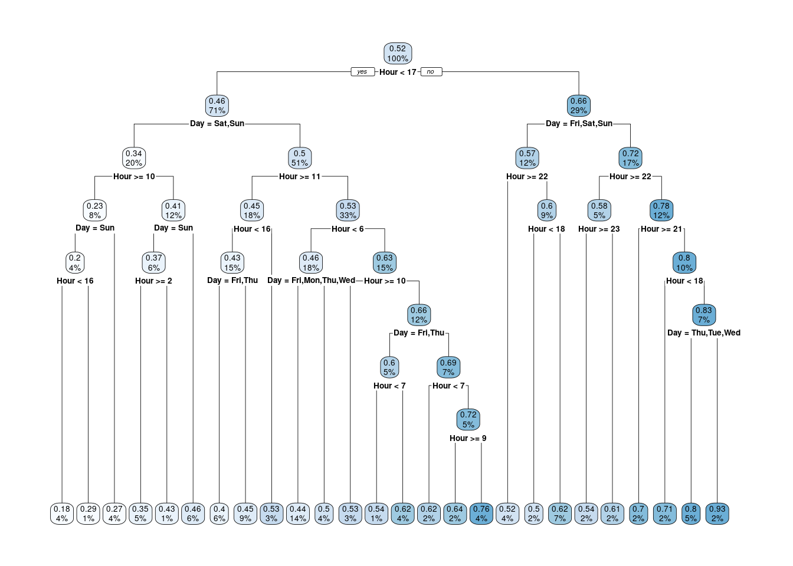

3 West Denmark
3.3 Best Three-Hour Window
## [1] "2024-11-15 CET"## [1] "2024-11-15 CET"| HourDK | Next_Three_Hours |
|---|---|
| 20:00 | 0.27 |
3.7 Time Windows

## .outcome
## 0.18 when Hour is 10 to 16 & Day is Sun
## 0.27 when Hour is 10 to 17 & Day is Sat
## 0.29 when Hour is 16 to 17 & Day is Sun
## 0.35 when Hour is 2 to 10 & Day is Sun
## 0.40 when Hour is 11 to 16 & Day is Fri or Thu
## 0.43 when Hour < 2 & Day is Sun
## 0.44 when Hour < 6 & Day is Fri or Mon or Thu or Wed
## 0.45 when Hour is 11 to 16 & Day is Mon or Tue or Wed
## 0.46 when Hour < 10 & Day is Sat
## 0.50 when Hour is 17 to 18 & Day is Fri or Sat or Sun
## 0.50 when Hour < 6 & Day is Tue
## 0.52 when Hour >= 22 & Day is Fri or Sat or Sun
## 0.53 when Hour is 10 to 11 & Day is Fri or Mon or Thu or Tue or Wed
## 0.53 when Hour is 16 to 17 & Day is Fri or Mon or Thu or Tue or Wed
## 0.54 when Hour >= 23 & Day is Mon or Thu or Tue or Wed
## 0.54 when Hour is 6 to 7 & Day is Fri or Thu
## 0.61 when Hour is 22 to 23 & Day is Mon or Thu or Tue or Wed
## 0.62 when Hour is 6 to 7 & Day is Mon or Tue or Wed
## 0.62 when Hour is 18 to 22 & Day is Fri or Sat or Sun
## 0.62 when Hour is 7 to 10 & Day is Fri or Thu
## 0.64 when Hour is 9 to 10 & Day is Mon or Tue or Wed
## 0.70 when Hour is 21 to 22 & Day is Mon or Thu or Tue or Wed
## 0.71 when Hour is 17 to 18 & Day is Mon or Thu or Tue or Wed
## 0.76 when Hour is 7 to 9 & Day is Mon or Tue or Wed
## 0.80 when Hour is 18 to 21 & Day is Thu or Tue or Wed
## 0.93 when Hour is 18 to 21 & Day is Mon